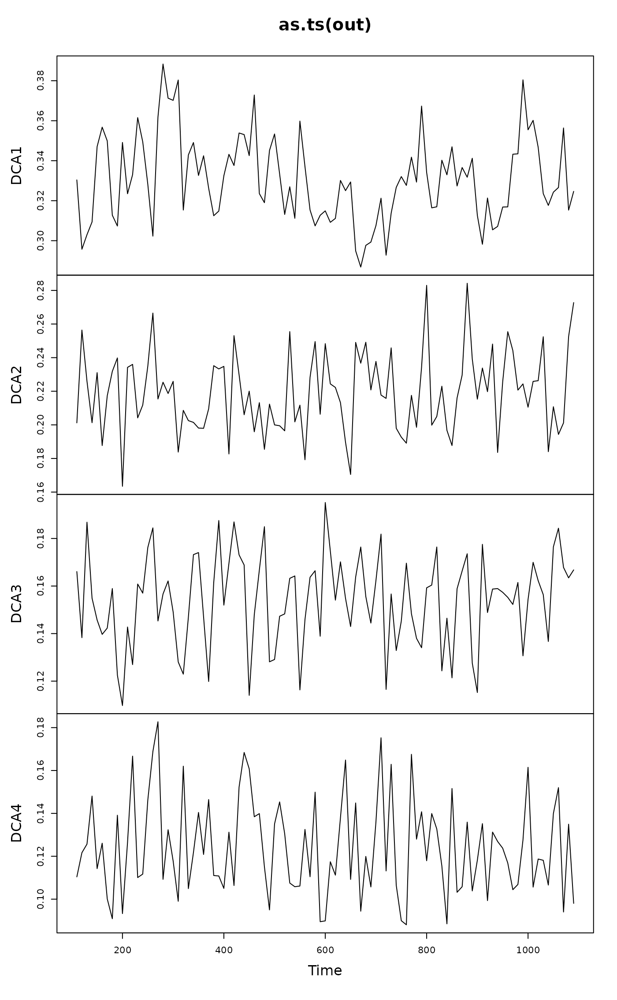
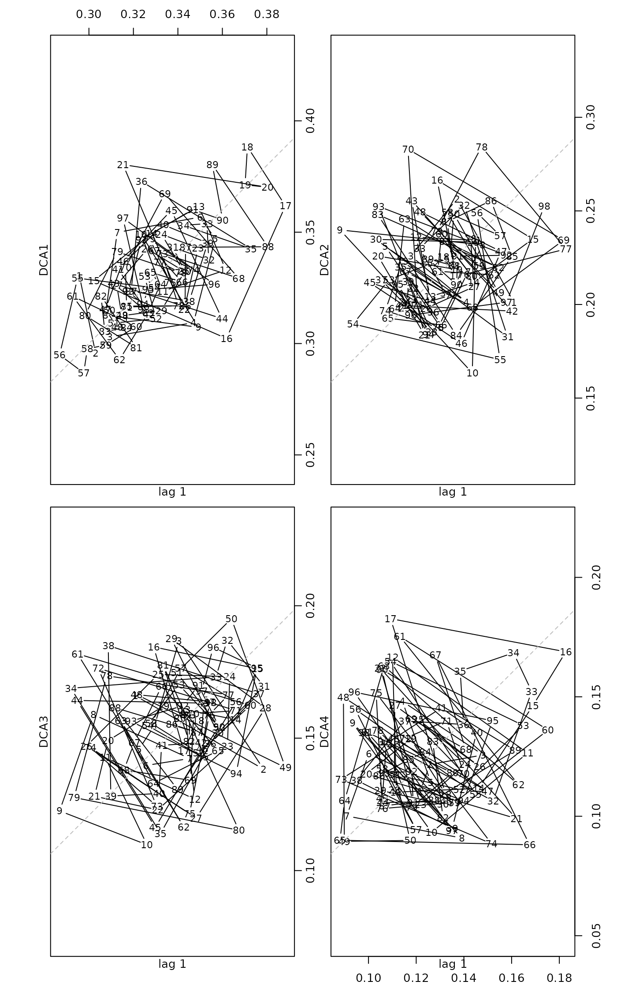
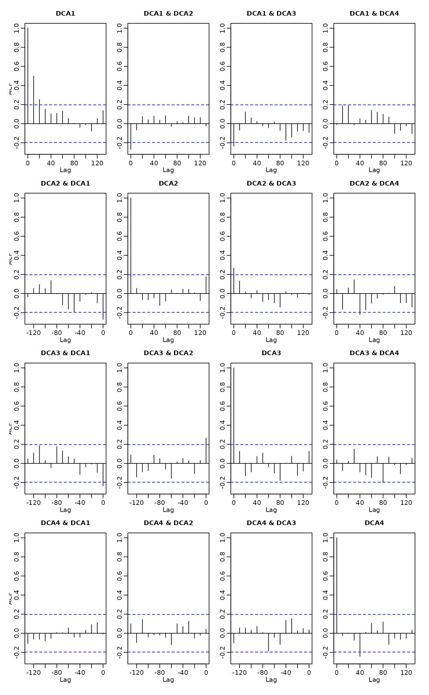

Evaluate Statistics with Null Models of Biological Communities
oecosimu.RdFunction evaluates a statistic or a vector of statistics in
community and evaluates its significance in a series of simulated
random communities. The approach has been used traditionally for
the analysis of nestedness, but the function is more general and can
be used with any statistics evaluated with simulated
communities. Function oecosimu collects and evaluates the
statistics. The Null model communities are described in
make.commsim and permatfull/
permatswap, the definition of Null models in
nullmodel, and nestedness statistics in
nestednodf (which describes several alternative
statistics, including nestedness temperature, \(N0\), checker
board units, nestedness discrepancy and NODF).
oecosimu(comm, nestfun, method, nsimul = 99, burnin = 0, thin = 1, statistic = "statistic", alternative = c("two.sided", "less", "greater"), batchsize = NA, parallel = getOption("mc.cores"), ...) # S3 method for oecosimu as.ts(x, ...) # S3 method for oecosimu as.mcmc(x)
Arguments
| comm | Community data, or a Null model object generated by
|
|---|---|
| nestfun | Function analysed. Some nestedness functions are
provided in vegan (see |
| method | Null model method: either a name (character string) of
a method defined in |
| nsimul | Number of simulated null communities (ignored if
|
| burnin | Number of null communities discarded before proper
analysis in sequential methods (such as |
| thin | Number of discarded null communities between two
evaluations of nestedness statistic in sequential methods (ignored
with non-sequential methods or when |
| statistic | The name of the statistic returned by
|
| alternative | a character string specifying the alternative
hypothesis, must be one of |
| batchsize | Size in Megabytes of largest simulation object. If
a larger structure would be produced, the analysis is broken
internally into batches. With default |
| parallel | Number of parallel processes or a predefined socket
cluster. With |
| x | An |
| ... | Other arguments to functions. |
Details
Function oecosimu is a wrapper that evaluates a statistic
using function given by nestfun, and then simulates a series
of null models based on nullmodel, and evaluates the
statistic on these null models. The vegan packages contains
some nestedness functions that are described separately
(nestedchecker, nesteddisc,
nestedn0, nestedtemp,
nestednodf), but many other functions can be used as
long as they are meaningful with simulated communities. An
applicable function must return either the statistic as a plain
number or a vector, or as a list element "statistic" (like
chisq.test), or in an item whose name is given in the
argument statistic. The statistic can be a single number
(like typical for a nestedness index), or it can be a vector. The
vector indices can be used to analyse site (row) or species (column)
properties, see treedive for an example. Raup-Crick
index (raupcrick) gives an example of using a
dissimilarities.
The Null model type can be given as a name (quoted character string)
that is used to define a Null model in make.commsim.
These include all binary models described by Wright et al. (1998),
Jonsson (2001), Gotelli & Entsminger (2003), Miklós &
Podani (2004), and some others. There are several quantitative Null
models, such those discussed by Hardy (2008), and several that are
unpublished (see make.commsim,
permatfull, permatswap for
discussion). The user can also define her own commsim
function (see Examples).
Function works by first defining a nullmodel with
given commsim, and then generating a series of
simulated communities with simulate.nullmodel. A
shortcut can be used for any of these stages and the input can be
Community data (
comm), Null model function (nestfun) and the number of simulations (nsimul).A
nullmodelobject and the number of simulations, and argumentmethodis ignored.A three-dimensional array of simulated communities generated with
simulate.nullmodel, and argumentsmethodandnsimulare ignored.
The last case allows analysing several statistics with the same simulations.
The function first generates simulations with given
nullmodel and then analyses these using the
nestfun. With large data sets and/or large number of
simulations, the generated objects can be very large, and if the
memory is exhausted, the analysis can become very slow and the
system can become unresponsive. The simulation will be broken into
several smaller batches if the simulated nullmodel
objective will be above the set batchsize to avoid memory
problems (see object.size for estimating the size of
the current data set). The parallel processing still increases the
memory needs. The parallel processing is only used for evaluating
nestfun. The main load may be in simulation of the
nullmodel, and parallel argument does not help
there.
Function as.ts transforms the simulated results of sequential
methods into a time series or a ts object. This allows
using analytic tools for time series in studying the sequences (see
examples). Function as.mcmc transforms the simulated results
of sequential methods into an mcmc object of the
coda package. The coda package provides functions for
the analysis of stationarity, adequacy of sample size,
autocorrelation, need of burn-in and much more for sequential
methods, and summary of the results. Please consult the
documentation of the coda package.
Function permustats provides support to the standard
density, densityplot,
qqnorm and qqmath functions for
the simulated values.
Value
Function oecosimu returns an object of class
"oecosimu". The result object has items statistic and
oecosimu. The statistic contains the complete object
returned by nestfun for the original data. The
oecosimu component contains the following items:
Observed values of the statistic.
Simulated values of the statistic.
Mean values of the statistic from simulations.
Standardized effect sizes (SES, a.k.a. the \(z\)-values) of the observed statistic based on simulations.
The \(P\)-values of the statistic based on simulations.
The type of testing as given in argument alternative.
The method used in nullmodel.
TRUE if method was sequential.
References
Hardy, O. J. (2008) Testing the spatial phylogenetic structure of local communities: statistical performances of different null models and test statistics on a locally neutral community. Journal of Ecology 96, 914--926.
Gotelli, N.J. & Entsminger, N.J. (2003). Swap algorithms in null model analysis. Ecology 84, 532--535.
Jonsson, B.G. (2001) A null model for randomization tests of nestedness in species assemblages. Oecologia 127, 309--313.
Miklós, I. & Podani, J. (2004). Randomization of presence-absence matrices: comments and new algorithms. Ecology 85, 86--92.
Wright, D.H., Patterson, B.D., Mikkelson, G.M., Cutler, A. & Atmar, W. (1998). A comparative analysis of nested subset patterns of species composition. Oecologia 113, 1--20.
Note
If you wonder about the name of oecosimu, look at journal
names in the References (and more in nestedtemp).
The internal structure of the function was radically changed in
vegan 2.2-0 with introduction of commsim and
nullmodel and deprecation of
commsimulator.
See also
Function oecosimu currently defines null models with
commsim and generates the simulated null model
communities with nullmodel and
simulate.nullmodel. For other applications of
oecosimu, see treedive and
raupcrick.
See also nestedtemp (that also discusses other
nestedness functions) and treedive for another
application.
Examples
## Use the first eigenvalue of correspondence analysis as an index ## of structure: a model for making your own functions. data(sipoo) ## Traditional nestedness statistics (number of checkerboard units) oecosimu(sipoo, nestedchecker, "r0")#> oecosimu object #> #> Call: oecosimu(comm = sipoo, nestfun = nestedchecker, method = "r0") #> #> nullmodel method ‘r0’ with 99 simulations #> #> alternative hypothesis: statistic is less or greater than simulated values #> #> Checkerboard Units : 2767 #> C-score (species mean): 2.258776 #> #> statistic SES mean 2.5% 50% 97.5% Pr(sim.) #> checkerboards 2767 -18.92 8032.9 7544.1 8025.0 8516.7 0.01 ** #> --- #> Signif. codes: 0 ‘***’ 0.001 ‘**’ 0.01 ‘*’ 0.05 ‘.’ 0.1 ‘ ’ 1## sequential model, one-sided test, a vector statistic out <- oecosimu(sipoo, decorana, "swap", burnin=100, thin=10, statistic="evals", alt = "greater") out#> oecosimu object #> #> Call: oecosimu(comm = sipoo, nestfun = decorana, method = "swap", #> burnin = 100, thin = 10, statistic = "evals", alternative = "greater") #> #> nullmodel method ‘swap’ with 99 simulations #> options: thin 10, burnin 100 #> alternative hypothesis: statistic is greater than simulated values #> #> #> Call: #> nestfun(veg = comm) #> #> Detrended correspondence analysis with 26 segments. #> Rescaling of axes with 4 iterations. #> #> DCA1 DCA2 DCA3 DCA4 #> Eigenvalues 0.3822 0.2612 0.1668 0.08723 #> Decorana values 0.4154 0.2465 0.1391 0.04992 #> Axis lengths 2.9197 2.5442 2.7546 1.78074 #> #> #> statistic SES mean 50% 95% Pr(sim.) #> DCA1 0.382249 2.44131 0.32359 0.32475 0.3602 0.02 * #> DCA2 0.261208 1.67081 0.21776 0.21748 0.2539 0.03 * #> DCA3 0.166788 0.21371 0.16212 0.16156 0.2013 0.38 #> DCA4 0.087226 -1.88542 0.12788 0.12779 0.1641 0.97 #> --- #> Signif. codes: 0 ‘***’ 0.001 ‘**’ 0.01 ‘*’ 0.05 ‘.’ 0.1 ‘ ’ 1## Use quantitative null models to compare ## mean Bray-Curtis dissimilarities data(dune) meandist <- function(x) mean(vegdist(x, "bray")) mbc1 <- oecosimu(dune, meandist, "r2dtable") mbc1#> oecosimu object #> #> Call: oecosimu(comm = dune, nestfun = meandist, method = "r2dtable") #> #> nullmodel method ‘r2dtable’ with 99 simulations #> #> alternative hypothesis: statistic is less or greater than simulated values #> #> statistic SES mean 2.5% 50% 97.5% Pr(sim.) #> statistic 0.64565 13.062 0.46756 0.44416 0.46744 0.4947 0.01 ** #> --- #> Signif. codes: 0 ‘***’ 0.001 ‘**’ 0.01 ‘*’ 0.05 ‘.’ 0.1 ‘ ’ 1## Define your own null model as a 'commsim' function: shuffle cells ## in each row foo <- function(x, n, nr, nc, ...) { out <- array(0, c(nr, nc, n)) for (k in seq_len(n)) out[,,k] <- apply(x, 2, function(z) sample(z, length(z))) out } cf <- commsim("myshuffle", foo, isSeq = FALSE, binary = FALSE, mode = "double") oecosimu(dune, meandist, cf)#> oecosimu object #> #> Call: oecosimu(comm = dune, nestfun = meandist, method = cf) #> #> nullmodel method ‘myshuffle’ with 99 simulations #> #> alternative hypothesis: statistic is less or greater than simulated values #> #> statistic SES mean 2.5% 50% 97.5% Pr(sim.) #> statistic 0.64565 3.2635 0.63528 0.62861 0.63507 0.6421 0.01 ** #> --- #> Signif. codes: 0 ‘***’ 0.001 ‘**’ 0.01 ‘*’ 0.05 ‘.’ 0.1 ‘ ’ 1## Use pre-built null model nm <- simulate(nullmodel(sipoo, "curveball"), 99) oecosimu(nm, nestedchecker)#> oecosimu object #> #> Call: oecosimu(comm = nm, nestfun = nestedchecker) #> #> nullmodel method ‘curveball’ with 99 simulations #> options: thin 1, burnin 0 #> alternative hypothesis: statistic is less or greater than simulated values #> #> Checkerboard Units : 2767 #> C-score (species mean): 2.258776 #> #> statistic SES mean 2.5% 50% 97.5% Pr(sim.) #> checkerboards 2767 1.9659 2660.4 2560.0 2674.0 2760.3 0.01 ** #> --- #> Signif. codes: 0 ‘***’ 0.001 ‘**’ 0.01 ‘*’ 0.05 ‘.’ 0.1 ‘ ’ 1## Several chains of a sequential model -- this can be generalized ## for parallel processing (see ?smbind) nm <- replicate(5, simulate(nullmodel(sipoo, "swap"), 99, thin=10, burnin=100), simplify = FALSE) ## nm is now a list of nullmodels: use smbind to combine these into one ## nullmodel with several chains nm <- smbind(nm, MARGIN = 3) nm#> An object of class “simmat” #> ‘swap’ method (binary, sequential) #> 18 x 50 matrix #> Number of permuted matrices = 495 #> Start = 110, End = 1090, Thin = 10 (5 chains) #>oecosimu(nm, nestedchecker)#> oecosimu object #> #> Call: oecosimu(comm = nm, nestfun = nestedchecker) #> #> nullmodel method ‘swap’ with 495 simulations #> options: thin 10, burnin 100, chains 5 #> alternative hypothesis: statistic is less or greater than simulated values #> #> Checkerboard Units : 2767 #> C-score (species mean): 2.258776 #> #> statistic SES mean 2.5% 50% 97.5% Pr(sim.) #> checkerboards 2767 0.5518 2715.5 2575.7 2700.0 2937.9 0.5625## After this you can use as.mcmc() and tools in the coda package to ## analyse the chains (these will show that thin, burnin and nsimul are ## all too low for real analysis).